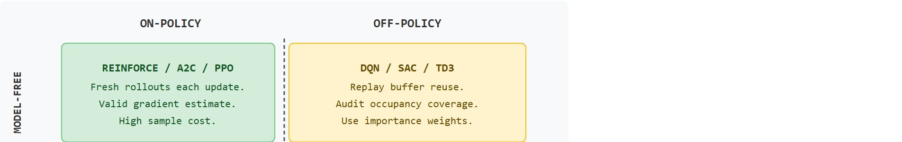
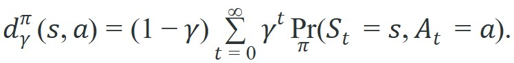

"Knowing the dynamics and using old data are separate questions. Confusing the two axes is how you spend twice the compute for half the insight."
Section 14.4
This section assumes familiarity with the Markov decision process formalism and the Bellman equations introduced in section 14.1, and with the value-function definitions in section 14.2. The occupancy-measure analysis here is taken further in section 15.3, where importance-weighted gradients compensate for the on/off-policy mismatch during Proximal Policy Optimization (PPO) training, and in section 16.1, where off-policy Q-learning is developed as the canonical solution to the data-reuse problem.
A robot arm trained overnight in simulation reaches for a cup it has never touched in the real world and misses by three centimeters. Was the mistake a flawed internal model of physics, or stale training data from an earlier, clumsier policy? Those are different problems with different fixes, and conflating them is one of the most common reasons embodied AI projects stall. Two orthogonal axes cut through the confusion: whether the algorithm builds an explicit model of environment dynamics, and whether its training data came from the very policy it is trying to improve. You will map every major RL algorithm onto this grid and learn exactly which failure mode each combination invites.
Figure 14.4A previews the core claim of this section: an algorithm's label is only useful once you know what it represents internally and whose data trained its last update.
Two RL papers can use the word "off-policy" to mean completely different things, and a third can call itself "model-based" while never planning a single step ahead: the labels collapse two independent decisions into one word, and the cost of the confusion shows up as a robot that fails for a reason you have misdiagnosed. This section draws on the control material in Chapter 7: Control for AI Practitioners and the environment interfaces in Chapter 10: Environments with Gymnasium and PettingZoo, then prepares the policy-gradient work in Chapter 15: Policy Gradient Methods and PPO. It separates two axes that are often blurred: whether the learner uses an explicit dynamics model, and whether it learns from data generated by the same policy it is improving.
Two axes set the technical contract: model-free vs. model-based learning and on-policy vs. off-policy data. Each axis gets a definition, then discounted occupancy quantifies how two policies see different parts of the same environment. Figure 14.4B lays out the resulting two-axis grid, placing a canonical algorithm family in each of the four cells.

Each cell in Figure 14.4B invites a distinct failure mode: model-free/on-policy pays in sample cost but rarely misdiagnoses a bad gradient; model-free/off-policy risks occupancy mismatch when the replay buffer under-covers the target policy; model-based/on-policy risks compounding model error even though the data itself stays valid; and model-based/off-policy stacks both hazards at once, so its audit checklist must cover model accuracy and replay coverage together. The remainder of this section works through each of these failure modes in turn, then the Algorithm Classification Checklist gives a step-by-step procedure for diagnosing which one is active.
The key question is practical: is the learner improving from its own fresh rollouts, from another policy's data, or from an explicit model of what the world will do next?
Model-free and model-based describe what the algorithm represents. On-policy and off-policy describe where the training data came from.
A common assumption is that model-based methods are inherently off-policy because they reuse imagined transitions instead of fresh environment steps. This is wrong. The two axes are orthogonal. A model-based algorithm can generate imagined rollouts entirely under the current policy, keeping it on-policy by data provenance. A model-free algorithm such as SAC learns from a replay buffer of transitions collected by earlier policy versions, making it off-policy. Confusing the axes causes wrong diagnostics when training fails. Model error compounds across planning horizons regardless of whether the data policy matches the target policy. Occupancy mismatch corrupts gradient estimates regardless of whether a dynamics model is present. Audit the two axes separately.
A model-free method estimates a policy, value function or action-value function without explicitly learning $P(s'\mid s,a)$ for planning. A model-based method learns or uses a transition and reward model defined over the underlying Markov decision process, then chooses actions by planning, imagination rollouts, or dynamic programming. In robot tasks, model-based methods can reduce physical samples, but learned models exhibit compounding error across imagined horizons: a one-step prediction error of 2% can reach 33% after 20 steps, turning a planner's imagined trajectory into fiction.
Compounding model error is like navigating a city with a map that is wrong by one block per turn. After two or three turns the route looks plausible; after twenty turns you are in a completely different neighbourhood. The planner believes it is heading downtown, but the real world placed every intersection one block east of where the map said it would be. No matter how confidently the planner follows the map, the accumulated drift is not recoverable without stopping to look at the actual street.
An on-policy method updates a target policy using data that same policy generated. An off-policy method learns about a target policy $\pi$ from data a behavior policy $\mu$ generated. Off-policy learning is attractive because embodied data are expensive. Collecting 1 million transitions on a physical robot arm at a typical 1 Hz decision frequency takes roughly 300 hours of continuous operation, whereas a replay buffer runs the same gradient update in minutes. (Higher-frequency controllers cut wall-clock time but increase wear and safety risk.) In practice this gap separates 50,000 physical episodes to converge from roughly 300, because each stored transition feeds dozens of gradient updates instead of being discarded after a single pass. But you must measure the mismatch between $\mu$ and $\pi$ rather than wave it away.
A replay buffer trained by a cautious policy is not evidence for a bold one; it is evidence against it.
So far: model-free methods estimate values or policies directly while model-based methods learn dynamics for planning (with compounding error as the risk); on-policy methods train on their own fresh data while off-policy methods reuse another policy's data (with cheaper samples but a coverage risk to measure).
For physical robots, this distinction carries a safety consequence beyond sample cost. On-policy rollouts keep the data distribution aligned with the current policy, so gradient estimates stay valid. A robot that deviates from the current policy to collect exploratory data risks hardware damage from out-of-distribution joint velocities or unexpected contact forces. Off-policy data reuse avoids that exposure but introduces a silent correctness hazard. The stored transitions reflect a different controller's intent, possibly an earlier, weaker policy that never attempted the contact-rich behaviors the improved policy now requires.
That mismatch of intent is not just a conceptual worry; it leaves a precise mathematical fingerprint. Mechanically, the hazard manifests in the policy gradient estimator. The standard gradient $\mathbb{E}_{\pi}[\nabla \log \pi(a|s) Q^\pi(s,a)]$ requires expectations under $\pi$. When data come from $\mu$, each term is weighted by the wrong distribution, biasing the gradient unless importance ratios $\rho = \pi(a|s)/\mu(a|s)$ are applied. In regions where $\mu$ rarely visits but $\pi$ would, $\rho$ can be very large, inflating variance and destabilizing updates.
The discounted occupancy measure makes this mismatch concrete:

This quantity says how often policy $\pi$ visits each state-action pair when near-term visits receive more weight. If a dataset has high occupancy for careful approaches but the target policy wants fast contact-rich grasps, the dataset may contain too little evidence for the target behavior.
The mechanism is data distribution control. Model choice defines what the learner can predict or plan with; policy mismatch defines whether the collected evidence supports the policy being improved.
Input: environment $\mathcal{M} = (S, A, P, R, \gamma)$, dataset $\mathcal{D} = \{(s_t, a_t, r_t, s_{t+1})\}$ collected under behavior policy $\mu$, candidate update target policy $\pi_\theta$
Output: classification of the learning setup on two independent axes (representation axis and data-source axis), with the primary audit question for each choice
Code Fragment 1 computes a finite-horizon approximation to discounted occupancy for two policies in a two-state robot task. The behavior policy is cautious; the target policy is more aggressive about contact.
# Estimate discounted occupancy for behavior and target policies.
# The mismatch shows where off-policy data may undersupport learning.
gamma = 0.9
states = ["approach", "contact"]
actions = ["slow", "fast"]
policies = {
"behavior_mu": {"approach": {"slow": 0.8, "fast": 0.2}, "contact": {"slow": 0.7, "fast": 0.3}},
"target_pi": {"approach": {"slow": 0.3, "fast": 0.7}, "contact": {"slow": 0.2, "fast": 0.8}},
}
def next_state(state, action):
return "contact" if action == "fast" else state
for name, policy in policies.items():
state_distribution = {"approach": 1.0, "contact": 0.0}
occupancy = {(s, a): 0.0 for s in states for a in actions}
for t in range(5):
weight = (1 - gamma) * (gamma ** t)
next_distribution = {"approach": 0.0, "contact": 0.0}
for state, state_prob in state_distribution.items():
for action, action_prob in policy[state].items():
prob = state_prob * action_prob
occupancy[(state, action)] += weight * prob
next_distribution[next_state(state, action)] += prob
state_distribution = next_distribution
print(name, {f"{s}/{a}": round(v, 3) for (s, a), v in occupancy.items()})The expected output shows the coverage mismatch directly in the occupancy mass. behavior_mu spends most of its discounted weight on cautious approach actions, while target_pi places much more mass on contact/fast, which is exactly where off-policy support becomes weakest.
Trace the occupancy update for target_pi over the first two time steps with $\gamma = 0.9$, starting from $\{$approach$: 1.0$, contact$: 0.0\}$. Step t=0: the weight is $(1-0.9)(0.9^0) = 0.1$. All mass sits in approach, where the policy picks slow with probability 0.3 and fast with 0.7. So occupancy gains approach/slow $= 0.1 \times (1.0 \times 0.3) = 0.030$ and approach/fast $= 0.1 \times (1.0 \times 0.7) = 0.070$. The next-state distribution becomes contact $= 0.7$ (from fast), approach $= 0.3$ (slow stays). Step t=1: the weight is $(1-0.9)(0.9^1) = 0.09$. Now approach holds 0.3 and contact holds 0.7. Occupancy gains approach/slow $+= 0.09 \times (0.3 \times 0.3) = 0.0081$ and contact/fast $+= 0.09 \times (0.7 \times 0.8) = 0.0504$. After just two of the five steps, contact/fast has already accumulated 0.0504 of mass while approach/slow has only 0.0381, confirming numerically that the aggressive target policy concentrates its weight exactly where the cautious buffer is thinnest.
When using SAC or any off-policy algorithm, set the replay buffer's min_buffer_size (called learning_starts in Stable-Baselines3) to at least 10,000 transitions before the first gradient update. Starting updates too early means the buffer is dominated by the random initialization policy, whose occupancy almost never covers the state-action pairs the target policy needs. A common symptom is Q-value divergence in the first few thousand steps, which practitioners often misattribute to the learning rate rather than to this cold-start coverage gap.
The example also clarifies model-based learning. If a reliable model predicted the transition from `approach` to `contact`, the learner could plan contact behavior before trying every variant on hardware. If the model predicts contact poorly, planning amplifies the error.
Dreamer (Hafner et al., 2020) is a concrete model-based example: it learns a recurrent world model and then trains a policy entirely on imagined rollouts, reducing physical samples by roughly 10x on DeepMind Control Suite tasks. SAC (Haarnoja et al., 2018) is a widely used model-free, off-policy counterpart: it learns from a replay buffer without a dynamics model, relying on entropy regularization (an added bonus term that rewards action-distribution randomness, keeping exploration alive) to maintain coverage. MBPO (Janner et al., 2019) sits between them, using short model-generated rollouts of only one to a few steps to augment a real replay buffer, deliberately keeping imagined horizons short to limit model-error compounding. Knowing which regime each algorithm occupies makes hyperparameter choices and failure diagnoses much more direct.
In practical experiments, replay buffers and offline datasets make off-policy learning convenient, while simulators and learned world models make model-based planning possible. The engineering shortcut is useful only when the artifact records which policy produced each transition and which policy the update is evaluating.
The common mistake is to report a high simulated return for an off-policy SAC agent and assume it will transfer, without checking whether the replay buffer actually covered the contact-rich states the deployed policy enters. On a Franka Panda grasping task, a buffer dominated by cautious early-policy approaches can show 90% simulated success while the hardware policy collides on first contact, because the occupancy mass the gradient relied on never included the fast-contact regime. The same trap hits model-based MBPO when a HalfCheetah dynamics model accurate over one step is trusted over twenty: the imagined return looks excellent and the real rollout diverges. Audit replay coverage and model rollout error before trusting the headline number.
A warehouse robot team can train a model-free value function from a replay buffer, then compare it with a model-based planner in the same simulator panel. The comparison is valid only if both methods are evaluated on the same starts, object poses, latency profile, and success definition.
The replay buffer has a point of view. Off-policy learning starts by asking whose point of view it is.
1. World models as off-policy preinit for robot manipulation (2024-2025). Large-scale video-trained world models (e.g., UniSim, Google DeepMind 2024; and RoboDreamer, 2024) now serve as off-policy data sources: a policy bootstraps from imagined rollouts of unseen objects before any real interaction. The open challenge is bounding model error at contact boundaries, where pixel-level world models diverge fastest from physical dynamics.
2. Hybrid on/off-policy algorithms that adapt data mixing online (2024-2025). Methods such as RLPD (Ball et al., 2023, extended in 2024 robotics benchmarks) and HybriRL mix fresh on-policy transitions with a frozen offline corpus inside a single actor-critic update, using adaptive importance weights to down-weight stale transitions. Active research (Berkeley Robot Learning Lab, 2024-2025) targets automating the mixing ratio rather than treating it as a tuned hyperparameter.
3. Foundation-model-guided model-based planning (2025-2026). Language and vision-language models are being used as implicit world models: given a task description, they propose subgoal sequences that a lightweight learned dynamics model then refines (UniPi, Du et al., 2024; SuSIE, Google DeepMind 2024). The on/off-policy status of these hybrid planners is often ambiguous, and formalizing their occupancy coverage properties relative to the downstream policy is an open problem.
Open problem for PhD students. All three directions above lack a unified occupancy-coverage certificate: given a mixture of real transitions, imagined transitions, and foundation-model subgoals, can you bound the policy-gradient bias as a function of each source's coverage of the target policy's state-action distribution? A tractable starting point would be a finite-state MDP experiment comparing coverage certificates across mixing strategies, using the discounted occupancy measure defined in this section.
Can you name the behavior policy, target policy, replay coverage, and whether the method plans with an explicit dynamics model? If not, the algorithm label is hiding the important assumption.
The two axes in this section answer different failure questions. If a model-based controller fails, inspect transition prediction, reward prediction, planning horizon, and model rollout error. If an off-policy learner fails, inspect whether the replay buffer actually covers the target policy's state-action occupancy.
For embodied agents, the strongest designs mix categories: a learned model for short-horizon contact prediction, a model-free value function for policy improvement, and off-policy demonstration data. The label matters less than the evidence that each source supports the update it feeds.
| Axis | Option | Primary Audit Question |
|---|---|---|
| Representation | Model-free | Does the value or policy estimate generalize to the deployment states? |
| Representation | Model-based | Does the dynamics model stay accurate across planned horizons and contact regimes? |
| Data source | On-policy | Is fresh rollout data affordable and safe enough for the update? |
| Data source | Off-policy | Does replay coverage support the target policy's occupancy? |
A robust implementation logs data provenance. Every transition should record the behavior policy, policy version, simulator or hardware source, reward version, and any model-generated rollout flag. Without those fields, an off-policy experiment cannot prove which distribution produced the evidence.
When a model-based method fails, run one-step prediction checks before judging the planner. When an off-policy method fails, inspect the occupancy mismatch before tuning the loss. These two diagnostics isolate different root causes.
For model-free, model-based, on-policy, and off-policy comparisons, co-compute success, return, model error, replay coverage, and safety cost on one environment panel. Do not compare a model-based planner's best simulator result with an off-policy learner's separate hardware run.
Model-free versus model-based is about what the learner represents. On-policy versus off-policy is about which policy produced the data.
Take a replay buffer from a cautious behavior policy and define a target policy that takes more contact-rich actions. List three state-action pairs whose occupancy you would audit before training off-policy.
OpenAI's Dactyl system, which trained a Shadow Hand to reorient a cube, sits squarely in the model-free, on-policy cell of the grid: it used PPO on fresh rollouts collected entirely in simulation, never a learned dynamics model. That choice is consistent with the compounding-error argument in this section: a learned model of contact-rich finger-cube physics would likely compound error fast enough that planned trajectories became fiction within a few steps, though the original paper does not state this rationale explicitly. Massive domain randomization in simulation, not model-based planning, is what carried the policy to the physical hand.
Occupancy mismatch visualizer (beginner, weekend): Build a Gymnasium CartPole or MountainCar environment where a scripted "behavior policy" collects a replay buffer, then train a second "target policy" with SAC from Stable-Baselines3; plot the discounted occupancy of each policy side by side to see which state-action regions are under-covered. The key challenge is computing and rendering the occupancy histogram correctly over discrete grid bins without confusing on-policy rollout data with replay buffer data.
MBPO short-rollout comparison in MuJoCo (intermediate, 1 to 2 weeks): Implement a stripped-down version of MBPO using a MuJoCo HalfCheetah or Hopper environment in Gymnasium: train a one-hidden-layer dynamics model, generate model rollouts of one, five, and twenty steps, and compare final policy return and Q-value divergence across those horizons using SAC as the policy optimizer. The key challenge is logging model rollout error per horizon separately from policy return so that compounding model error is visible as a distinct failure signal rather than being absorbed into the aggregate score.
Goal: feel the sample-efficiency gap between on-policy and off-policy learning, and watch the off-policy cold-start hazard from the Tip box above appear in real training curves.
Tools needed: Python with Stable-Baselines3 and Gymnasium (pip install stable-baselines3 gymnasium); the Pendulum-v1 environment; TensorBoard for the learning curves.
What to vary: (1) train PPO (on-policy, model-free) and SAC (off-policy, model-free) on the same environment for the same number of environment steps, say 50,000; (2) for SAC, sweep learning_starts over the values 100, 1000, and 10000 to change how much random-policy data fills the buffer before updates begin.
What to observe: compare the episode-return curves. SAC should reach good return in far fewer environment steps than PPO because it reuses each transition many times from the replay buffer, while PPO discards rollouts after one gradient pass. With learning_starts=100, watch for early Q-value spikes or unstable return: that is the cold-start coverage gap, where the buffer is dominated by the random initialization policy whose occupancy does not match the target policy. Raising learning_starts to 10000 should smooth the early curve. Allow 15 to 30 minutes total on a laptop CPU.
This section made representation and data provenance explicit. Next, Section 14.5 explains why physical sample cost, reward proxies, and safety constraints make embodied RL unusually demanding.
The standard textbook for RL foundations. Read Part I for MDPs, value functions, and the Bellman equations; Part II for TD learning and eligibility traces; Part III for function approximation and policy gradient theory. It is the primary notation reference for this module.
Brockman, G. et al. (2016). OpenAI Gym. arXiv.
Introduced the step/reset/render environment interface that became the standard for RL research. Read for the API contract; nearly every RL library and tutorial assumes this interface, and Gymnasium maintains it with minor extensions. Understanding it is prerequisite to using PettingZoo, Isaac Lab, or MuJoCo.
Todorov, E., Erez, T., and Tassa, Y. (2012). MuJoCo: A physics engine for model-based control. IROS.
Describes the contact physics model, generalized coordinates, and constraint solver that make MuJoCo accurate and fast for robot learning. Read the original paper to understand why smooth contact gradients benefit model-based methods; in practice use the official docs for API, but this paper explains why MuJoCo physics behaves differently from game-engine simulators.
Puterman, M. L. (1994). Markov Decision Processes: Discrete Stochastic Dynamic Programming. Wiley.
Provides the formal mathematical treatment of MDPs, Bellman equations, and the theory of optimal policies. Read Chapter 4 for policy evaluation and Chapter 6 for policy iteration; this is the reference to check when the intuitions from Sutton and Barto need formal grounding in existence and convergence proofs.
Towers, M. et al. Gymnasium documentation. Farama Foundation.
The actively maintained successor to OpenAI Gym with bug fixes, consistent seeding, and terminated/truncated distinction. Use this as the environment API reference throughout the chapter; the terminated/truncated split matters for bootstrap targets at episode boundaries.